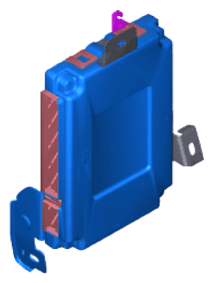

LEMON Manuals
: Even more car manuals for everyone: 1960-2025
Home
>>
Hyundai
>>
2022
>>
Elantra N Line, Standard Trans
>>
Repair and Diagnosis (Single Page)
>>
Suspension
>>
Wheels & Tire System
>>
Tire Pressure Monitoring System (Except HEV)
>>
TPMS Receiver
>>
Description & Operation
>>
Description
>>
TPMS Receiver: BCM (Body Control Module) Integrated Management
TPMS Receiver: BCM (Body Control Module) Integrated Management

Courtesy of HYUNDAI MOTOR AMERICA
Early state
Platform information and sensor ID are not input.
Normal State
To detect tire air pressure and DTC, the receiver must be in normal operation.
The receiver can check the position and information of the sensor.